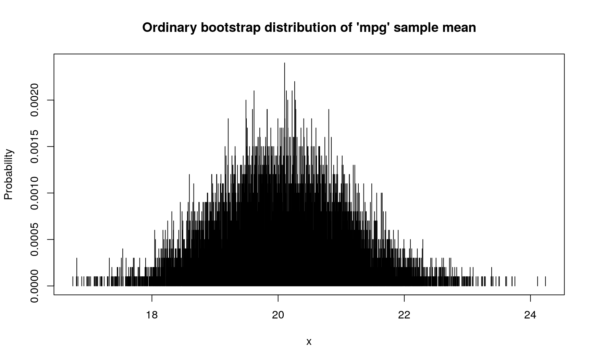
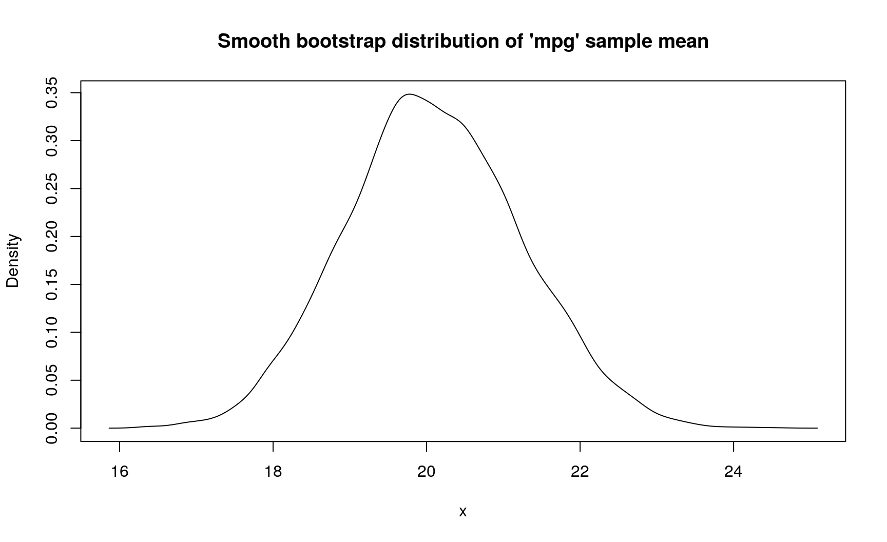
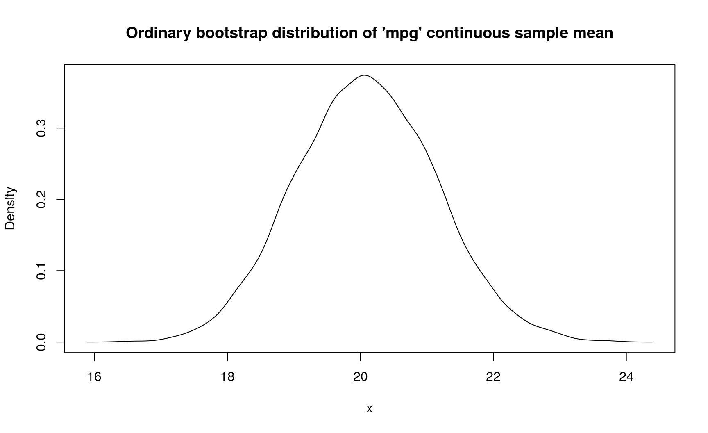

Statistical uncertainty with R and pdqr
Prologue
I am glad to announce that my latest, long written R package ‘pdqr’ is accepted to CRAN. It provides tools for creating, transforming and summarizing custom random variables with distribution functions (as base R ‘p*()’, ‘d*()’, ‘q*()’, and ‘r*()’ functions). You can read a brief overview in one of my previous posts.
We will need the following setup:
library(pdqr)
library(magrittr)
# For the sake of reproducibility
set.seed(20191111)Statistical uncertainty
General description
Statistical estimation usually has the following setup. There is a sample (observed, usually randomly chosen, set of values of measurable quantities) from some general population (whole set of values of the same measurable quantities). We need to make conclusions about the general population based on a sample. This is done by computing summary values (called statistics) of a sample, and making reasonable assumptions (with process usually called inference) about how these values are close to values that potentially can be computed based on whole general population. Thus, summary value based on a sample (sample statistic) is an estimation of potential summary value based on a general population (true value).
How can we make inference about quality of this estimation? This question itself describes statistical uncertainty and can be unfolded into a deep philosophical question about probability, nature, and life in general. Basically, the answer depends on assumptions about the relation between sample, general population, and statistic.
For me, the most beautiful inferential approach is bootstrap. It has the following key assumption: process of producing samples from general population can be simulated by doing random sampling with replacement from present sample. In other words, we agree (and practice often agrees with us) that random sampling with replacement from current sample (sometimes called bootstrap sampling) has a “close enough” behavior to the “true nature” of how initial sample was created. Numerical estimation of “how close” is also an interesting problem, but it is a more complicated topic.
Computation with pdqr
Natural way of computing bootstrap quantities is straightforward: produce \(B\) random bootstrap samples, for each one compute value of statistic under question, and summarize sample of statistic values with numerical quantity (usually with some center and spread values).
There are many ways of performing bootstrap in R, like boot::boot(), rsample::bootstraps(), and others. In turn, ‘pdqr’ offers its own way of describing and doing bootstrap inference for one-dimensional numeric sample(s):
- Create a random variable (in the form of pdqr-function with
new_*()family) based on initial sample. This random variable already describes a general population with “bootstrap assumption”: it will produce values based on initial sample. Type of this variable determines the type of bootstrap:- Type
"discrete"describes ordinary bootstrap. Only values from initial sample can be produced. - Type
"continuous"describes smooth bootstrap. Initial sample is smoothed by doing kernel density estimation with density() function and random variable produces values from distribution with that density.
- Type
- Transform created random variable into one that produces statistic values obtained with bootstrap. Sometimes this can be done with basic mathematical operations like
+,min, etc. But usually this is done with form_estimate() function: it creates many (10000 by default) bootstrap samples, for each computes statistic value, and creates its own random variable in the form of pdqr-function (class and type are preserved from supplied random variable, but this can be adjusted). It needs at least three arguments:f: pdqr-function representing random variable. In described setup it is created as a result of “Create” step.stat: statistic function that accepts numeric vector of sizesample_sizeand returns single numeric or logical output.sample_size: Size of a sample that each bootstrap draw should produce. In described setup it should be equal to number of elements in initial sample.
- Summarize distribution of statistic. Usually this is point measure of center or spread, or interval.
Example 1: single numerical estimate
Mean value of ‘mpg’ variable in mtcars dataset is 20.090625. However, having in mind statistical uncertainty, we can ask how precise is this estimation? This can, and should, be reformulated in the following question: if we repeat sampling sets of 32 cars from general population of all cars, how close their ‘mpg’ sample means will be to each other? This can be answered by computing bootstrap distribution of sample means (pipe %>% function from ‘magrittr’ package is used to simplify notation):
# Using ordinary bootstrap
d_mpg_dis_mean <- mtcars$mpg %>%
new_d(type = "discrete") %>%
form_estimate(stat = mean, sample_size = nrow(mtcars))
# Spread of this bootstrap distribution describes the precision of estimation:
# bigger values indicate lower precision
summ_sd(d_mpg_dis_mean)
## [1] 1.04067
# This discrete distribution has the following d-function
plot(
d_mpg_dis_mean,
main = "Ordinary bootstrap distribution of 'mpg' sample mean"
)
If modeling assumption about continuous nature of ‘mpg’ variable is reasonable (which it seems so), you can use “smooth bootstrap” by changing type of initial pdqr-function:
# Using smooth bootstrap with `type = "continuous"`
d_mpg_con_mean <- mtcars$mpg %>%
new_d(type = "continuous") %>%
form_estimate(stat = mean, sample_size = nrow(mtcars))
# Spread is higher in this case because kernel density estimation with
# `density()` function extends support during creation of pdqr-function on the
# bootstrap step
summ_sd(d_mpg_con_mean)
## [1] 1.153957
plot(
d_mpg_con_mean,
main = "Smooth bootstrap distribution of 'mpg' sample mean"
)
One can also do ordinary bootstrap but represent bootstrap distribution of sample mean with continuous random variable:
# Using ordinary bootstrap, but treating sample mean as continuous
d_mpg_con_mean_2 <- mtcars$mpg %>%
new_d(type = "discrete") %>%
form_estimate(
stat = mean, sample_size = nrow(mtcars),
# Create continuous pdqr-function from bootstrap sample means
args_new = list(type = "continuous")
)
summ_sd(d_mpg_con_mean_2)
## [1] 1.063524
plot(
d_mpg_con_mean_2,
main = "Ordinary bootstrap distribution of 'mpg' continuous sample mean"
)
In this case, sample mean has standard deviation from 1.04067 to 1.1539572 (depends on assumptions about data generating process).
Example 2: single logical estimate
Share of 4-cylinder cars in mtcars is equal to 0.34375. However, it might happen that we don’t care about actual value, but only if it is bigger 0.3 or not. In present data it is bigger, but how sure we can be about that? In other words: if we repeat sampling sets of 32 cars from general population of all cars, which part of it will have share of 4-cylinder cars bigger than 0.3?. Here is the way of computing that with ‘pdqr’:
# If statistic returns logical value (indicating presence of some feature in
# sample), output estimate pdqr-function is "boolean": "discrete" type function
# with elements being exactly 0 (indicating `FALSE`) and 1 (indicating `TRUE`).
d_cyl_lgl <- mtcars$cyl %>%
new_d(type = "discrete") %>%
form_estimate(
stat = function(x) {mean(x == 4) > 0.3},
sample_size = nrow(mtcars)
)
d_cyl_lgl
## Probability mass function of discrete type
## Support: [0, 1] (2 elements, probability of 1: 0.7113)
# To extract certain probability from boolean pdqr-function, use
# `summ_prob_*()` functions
summ_prob_true(d_cyl_lgl)
## [1] 0.7113
summ_prob_false(d_cyl_lgl)
## [1] 0.2887In this case, estimated probability that share of 4-cylinder cars in general population is more than 0.3 is 0.7113.
Example 3: comparison of estimates
In mtcars there are 19 cars with automatic transmission (‘am’ variable is 0) and 13 with manual (‘am’ variable is 1). We might be concerned with the following question: are cars with automatic transmission heavier than cars with manual transmission? This is an example of question where reformulating is very crucial, because it leads to completely different methodologies. Basically, it is all about dealing with statistical uncertainty and how to measure that one numerical set is bigger than the other.
First, rather verbose, way of expanding this question is this one: if we randomly choose a car with automatic transmission (uniformly on set of all cars with automatic transmission) and a car with manual (uniformly on set of all cars with manual transmission), what is the probability that weight of the first one is bigger than the second one?. With ‘pdqr’ this can be computed straightforwardly by comparing two random variables (which is implemented exactly like the question above; read more here):
# Seems reasonable to treat weight as continuous random variable. Note that this
# means use of kernel density estimation, which can lead to random variable that
# returns negative values. As weight can be only positive, it is a good idea to
# ensure that. Package 'pdqr' has `form_resupport()` function for that.
d_wt_am0 <- mtcars$wt[mtcars$am == 0] %>%
new_d(type = "continuous") %>%
# Ensure that returned values are only positive
form_resupport(c(0, NA))
d_wt_am1 <- mtcars$wt[mtcars$am == 1] %>%
new_d(type = "continuous") %>%
form_resupport(c(0, NA))
# Comparing two pdqr-functions with `>=` results into boolean pdqr-function
summ_prob_true(d_wt_am0 >= d_wt_am1)
## [1] 0.9209063So in this case the answer is that probability of “automatic” cars being heavier than “manual” ones is around 0.921.
Second way of understanding question about comparing is the following: is average weight of “automatic” cars bigger than of “manual”?. This type of questions are more widespread in statistical practice. Having to deal with statistical uncertainty, this should be reformulated: if we repeat sampling (in parallel pairs) sets of 19 “automatic” cars and of 13 “manual” cars, which part of the set pairs will have mean weight of “automatic” cars bigger? This question implies creating bootstrap distribution of sample means for “automatic” and “manual” cars with the following comparing:
d_wt_am0_mean <- d_wt_am0 %>%
form_estimate(stat = mean, sample_size = sum(mtcars$am == 0)) %>%
# Ensure "positiveness" of random variable
form_resupport(c(0, NA))
d_wt_am1_mean <- d_wt_am1 %>%
form_estimate(stat = mean, sample_size = sum(mtcars$am == 1)) %>%
form_resupport(c(0, NA))
# Comparing two random variables representing sample means
summ_prob_true(d_wt_am0_mean >= d_wt_am1_mean)
## [1] 1So in this case the answer is that probability of “automatic” cars being heavier than “manual” ones is 1.
Computed results can have decisively different outcomes. If researcher sets a standard 0.95 rule, first variant would imply that conclusion ‘“automatic” cars are heavier than “manual”’ isn’t significant, while the second would imply otherwise.
Epilogue
- Basic knowledge about statistical uncertainty is crucial to understand the process of statistical inference.
- One of the most popular methodologies for doing statistical inference is bootstrap. There are at least two kinds of it: ordinary and smooth.
- Package ‘pdqr’ offers extensive functionality for describing and estimating statistical uncertainty. Core functions here are
new_*()family,form_estimate(), and comparison operators.
## R version 3.6.1 (2019-07-05)
## Platform: x86_64-pc-linux-gnu (64-bit)
## Running under: Ubuntu 18.04.3 LTS
##
## Matrix products: default
## BLAS: /usr/lib/x86_64-linux-gnu/openblas/libblas.so.3
## LAPACK: /usr/lib/x86_64-linux-gnu/libopenblasp-r0.2.20.so
##
## locale:
## [1] LC_CTYPE=ru_UA.UTF-8 LC_NUMERIC=C
## [3] LC_TIME=ru_UA.UTF-8 LC_COLLATE=ru_UA.UTF-8
## [5] LC_MONETARY=ru_UA.UTF-8 LC_MESSAGES=ru_UA.UTF-8
## [7] LC_PAPER=ru_UA.UTF-8 LC_NAME=C
## [9] LC_ADDRESS=C LC_TELEPHONE=C
## [11] LC_MEASUREMENT=ru_UA.UTF-8 LC_IDENTIFICATION=C
##
## attached base packages:
## [1] stats graphics grDevices utils datasets methods base
##
## other attached packages:
## [1] magrittr_1.5 pdqr_0.2.0
##
## loaded via a namespace (and not attached):
## [1] Rcpp_1.0.2 bookdown_0.13 crayon_1.3.4 digest_0.6.21
## [5] evaluate_0.14 blogdown_0.15 pillar_1.4.2 rlang_0.4.0
## [9] stringi_1.4.3 rmarkdown_1.15 tools_3.6.1 stringr_1.4.0
## [13] xfun_0.9 yaml_2.2.0 compiler_3.6.1 htmltools_0.3.6
## [17] knitr_1.25